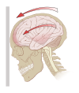

concussion

Definition: A concussion, also known as a mild traumatic brain injury (mTBI), is a head injury that temporarily affects brain functioning. Symptoms may include loss of consciousness; memory loss; headaches; difficulty with thinking, concentration, or balance; nausea; blurred vision; dizziness; sleep disturbances, and mood changes. Any of these symptoms may begin immediately, or appear days after the injury. Concussion should be suspected if a person indirectly or directly hits their head and experiences any of the symptoms of concussion. Symptoms of a concussion may be delayed by 1–2 days after the accident. It is not unusual for symptoms to last 2 weeks in adults and 4 weeks in children. Fewer than 10% of sports-related concussions among children are associated with loss of consciousness.
Source: Wikipedia
Wikipedia Page (Something wrong with this association? Let us know.)
Wikidata Page (Something wrong with this association? Let us know.)